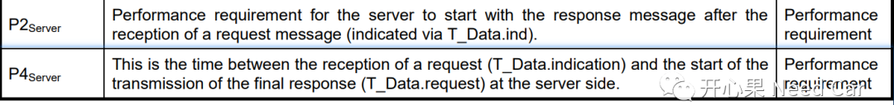
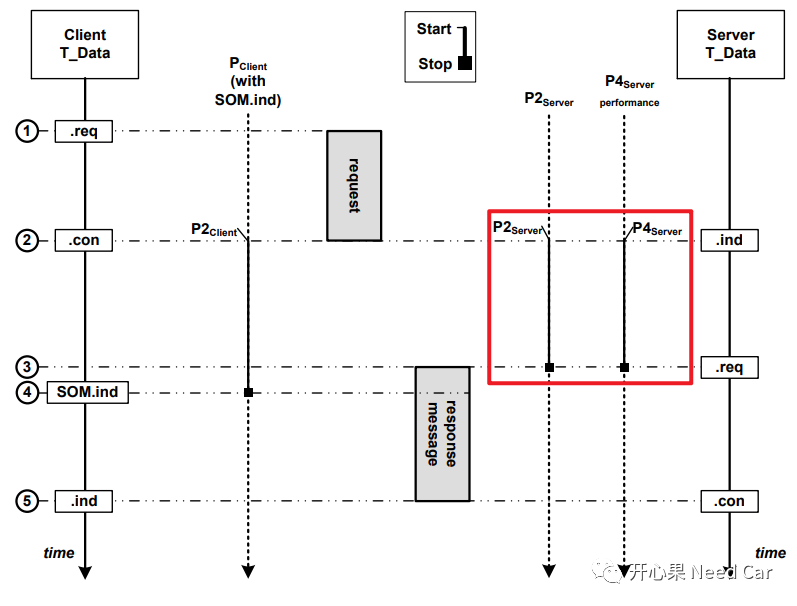
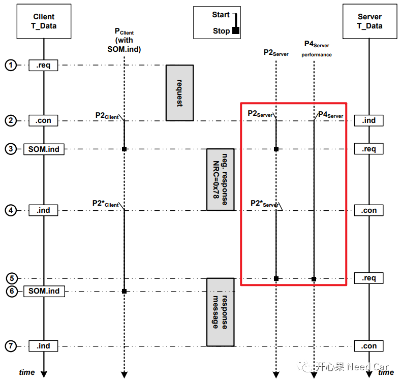
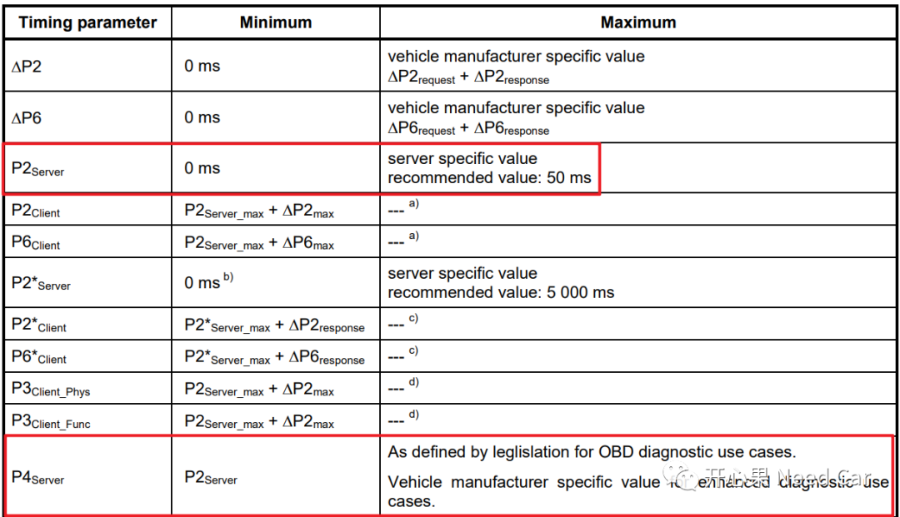
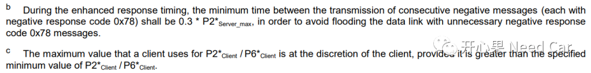
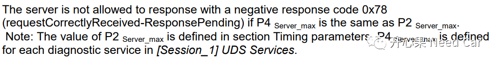
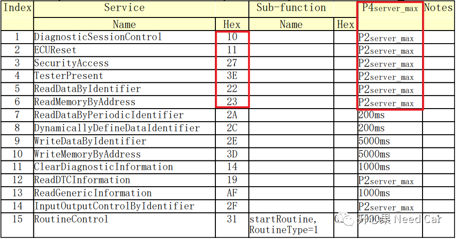

项目开发中，Uds诊断问题相对通信、标定、网络管理等，报的bug比较多。而这些bug的重复出现，有很大一部分是对需求解读不到位造成的。最近在查reopen问题，发现了一些诊断问题，其实并不难，只是对需求的解读不到位，导致功能没有开发好。P2Server与P4server时间解读不清，导致测试报告红了一片，本文我们就解读解读P2Server与P4server时间，希望能帮你少犯错。
参考ISO 14229-2，具体P2Server与P4server时间如下所示：

看到标识“Server”，我们应该清楚是对ECU来说的，如果标识“Client”，就是对上位机来说的，所以，请别混淆。
P2Server：ECU收到诊断服务请求开始到ECU发出诊断响应的时间，更具体点说就是DCM收到诊断请求通知到DCM响应诊断服务的时间。P4server：ECU收到诊断请求到最终（final）响应诊断请求的时间。为什么说“最终”呢？有些服务，ECU可以响应某个诊断请求，但是在P2Server_max时间内（假设P2Server_max = 50ms），ECU处理不完该诊断请求，想争取多一点时间，之后再响应上位机，怎么办呢？ECU先响应上位机一个NRC0x78 Pending报文，告诉上位机，你再给我点时间，给多少时间呢？给P2*Server时间，如果一个P2*Server时间不够，可以再给一个P2*Server时间。那P2*Server时间是多少呢？一般需求会给出具体数值，比如：P2*Server_max = 5000ms，那可以给几个P2*Server时间呢？一般需求也会给出具体数值，比如：5。那么ECU最多可以响应上位机5个NRC0x78 Pending报文，ECU就可以争取5个P2*Server_max时间。注意：如果有P4Server_max约束，就不需要约束P2*Server_max的次数，即需求约束一个条件即可。P4server与P2Server、P2*Server关系需要分两种情况讨论：当某个诊断服务请求，ECU可以在P2Server_max时间内响应时，P4server = P2Server，ECU不需要先回复上位机NRC0x78 Pending报文（不需要争取额外时间），就可以处理该诊断服务，如下所示：

当某个诊断服务请求，ECU无法在P2Server_max时间内响应时，ECU需要先回复上位机NRC0x78 Pending报文，争取额外的P2*Server时间去处理该诊断服务，P4server > P2Server，P4server = P2Server_max+NxP2*Server(N = 1、2、3...)，注意：当有P4server_max约束时，即使项目没有给出N的次数，N的值也可以推算出来，后面会谈P4server_max。P4server、P2Server、P2*Server关系如下所示：

P2Server与P4server各自的时间范围是多少呢？ISO 14229-2给出了推荐值，如下所示：

也就是说P2Server：0~50ms（P2Server_max = 50ms），P4Server：P2Server~自定义（P4Server_max）。自定义？是的，你没看错，需求可以要求某些诊断服务的P4Server_max = 1000ms，某些诊断服务的P4Server_max = 5000ms。如果ECU可以连续回复NRC0x78 Pending报文，连续的两个NRC0x78 Pending报文间隔多少合适呢？按照ISO 14229-2给的建议，两个NRC0x78 Pending报文最小间隔 = 0.3 * P2*Server_max，按照ISO 14229-2推荐值P2*Server_max = 5000ms，则两个连续NRC0x78 Pending报文最小间隔为0.3*5000 = 1500ms。所以两个连续NRC0x78 Pending报文间隔范围为：0.3 * P2*Server_max~P2*Server_max（本例：1500ms~5000ms），这个点很隐蔽，给你揪出来了，开发时请留意！如果诊断服务响应受P4Server_max约束，最多只能回复一个NRC0x78 Pending报文，那就不需要考虑连续NRC0x78 Pending报文间隔的问题。
结合项目实际，我们解读一个软件需求SRS(Software Requirements Specification)：
P2Server_max = 50ms，P2*Server_max = 5000ms。
解读：P2Server_max这个没什么说的，就是要求P2Server_max = 50ms时间内，ECU必须响应诊断服务请求。P2*Server_max是ECU可以额外争取的诊断服务处理时间，但是受P4Server_max约束。

解读：如果P2Server_max =P4Server_max，那么ECU在功能实现时，不能回复NRC0x78 Pending报文，即不给ECU争取额外的服务处理时间，必须在50ms内应答上位机。这样做的目的是什么呢？快，尤其某些节点是网关节点，又挂载着从节点，当需要升级从节点时，不希望从节点的某些服务回复NRC0x78 Pending报文，拖慢升级的进度。SRS3:

解读：
- $10 、$11、$27、$3E、$22、$23、$19、$2F服务等，P2Server_max =P4Server_max，这些服务的响应必须在50ms内给出；
- $2A、$2C服务等，ECU可以回复上位机一次NRC0x78 Pending报文，虽然想争取P2*Server_max(5000ms)时间，但是最终响应必须在200ms内响应，因为P4Server_max = 200ms，这里回复NRC0x78 Pending报文的次数就是通过P4Server_max推算出来的，所以需求就不必要求回复NRC0x78 Pending报文的次数（即上文提到的N）。这就是前面一直说的P2*Server_max受P4Server_max约束；
- $2E、$3D服务等，ECU可以回复上位机一次NRC0x78 Pending报文，但是最终响应必须在5000ms内响应，因为P4Server_max = 5000ms；
有些服务，比如$10 02，50ms的时间，ECU显然不能处理完该服务，怎么办呢？在实现的层面，ECU可以先回复正响应，再执行复位Action，但是此时要约束上位机发送下一帧诊断服务的时间，因为ECU复位期间，诊断指令不会再接收，对于CAN总线，Controller已经关闭，上位机（比如：Canoe）中看到的都是错误帧，直到BootLoader完成初始化，通信使能，Controller再次打开，才能接收诊断服务指令。
本人自觉水平和能力有限，难免有表述不准之处，如有发现表述错误之处，还望读者能指出，以便我及时更正，给大家分享正确的表述。
ISO_FDIS_14229-2_UDS-SLS_RevOn_2012-05-14.pdf